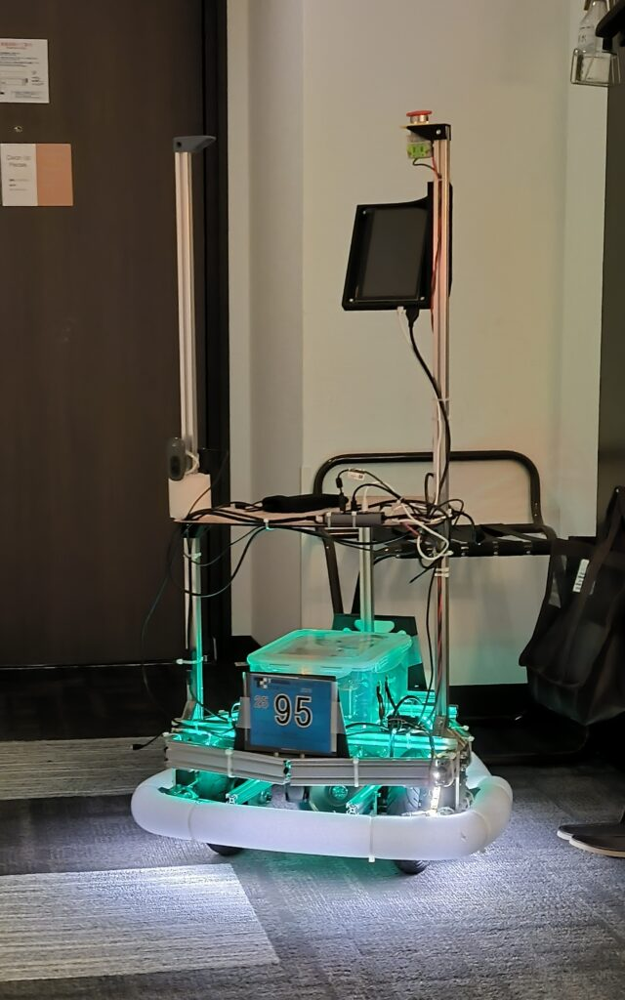
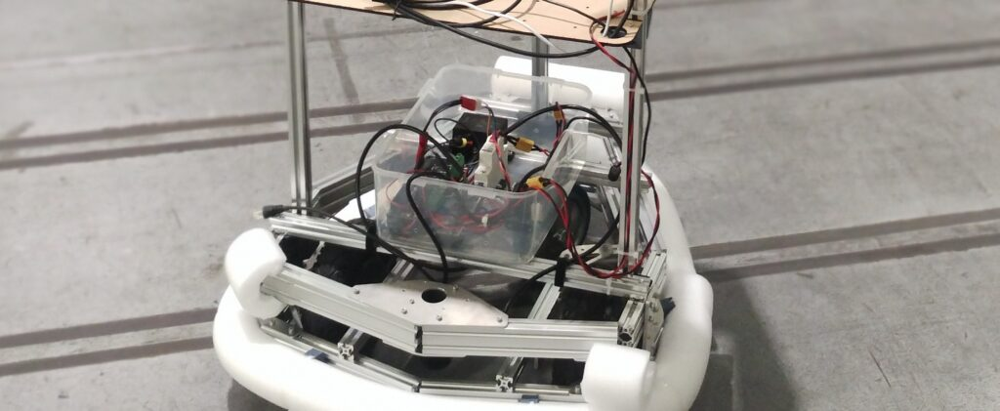
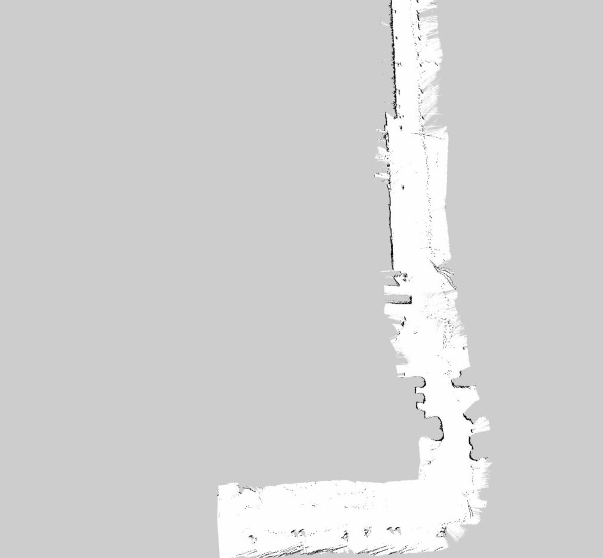
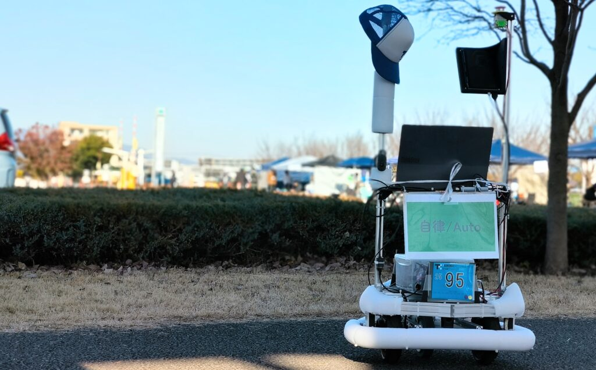

屋外を走るロボットをつくる
ロボット技術研究会のUniLabで、つくばチャレンジ2025に参加しました。自作機が屋外の道路を自律走行することを目標に、車体から走行ソフトウェアまで準備しました。
段差を越える足回り
直径240mmのインホイールモーターを使った差動二輪を採用。アルミフレームにMDFや3Dプリント部品を組み合わせ、2D LiDAR、ノートPC、IMUを搭載しました。機体はバッテリーを含め約15kgです。
地図作成と走行制御
ROS 2 Humble上でslam_toolboxによる地図作成とNav2によるナビゲーションを構成。地図上に設定したウェイポイントをたどります。モーターはVESC、姿勢計測にはBNO055を使用し、M5Stackとmicro-ROSを通じて上位側と接続しました。
現地で分かった課題と結果
自動走行の公式記録は0.3mでした。傾斜や路面の振動によって2D LiDARの見え方が変わり、屋内ではできていた自己位置推定が現地で不安定に。3D LiDARの活用やカメラによる補正、計算能力と準備期間の確保が次の課題になりました。
制作の記録



